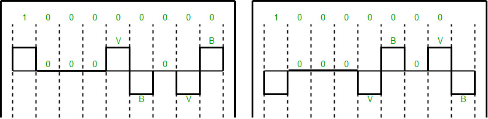
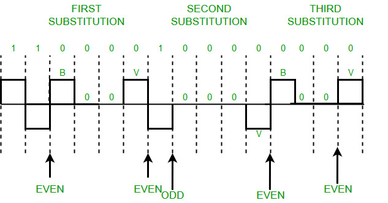

Prerequisite – Block Coding, Line Coding
A computer network is designed to send information from one point to another. Data that we send can either be digital or analog. Also signals that represent data can also be digital or analog.
Thus to send data by using signals, we must able to convert data into signals this conversion can be Analog to Analog, Analog to Digital, Digital to Analog or Digital to Digital.
Digital to Digital conversion involves three techniques – Line Coding, Block Coding, and Scrambling. Line Coding is always needed, whereas Block Coding and Scrambling may or may not be needed depending upon need.
Scrambling is a technique that does not increase the number of bits and does provide synchronization. Problem with technique like Bipolar AMI(Alternate Mark Inversion) is that continuous sequence of zero’s create synchronization problems one solution to this is Scrambling.
There are two common scrambling techniques:
- B8ZS(Bipolar with 8-zero substitution)
- HDB3(High-density bipolar3-zero)
B8ZS(Bipolar with 8-zero substitution) –
This technique is similar to Bipolar AMI except when eight consecutive zero-level voltages are encountered they are replaced by the sequence,”000VB0VB”.
Note –
- V(Violation), is a non-zero voltage which means signal have same polarity as the previous non-zero voltage. Thus it is violation of general AMI technique.
- B(Bipolar), also non-zero voltage level which is in accordance with the AMI rule (i.e.,opposite polarity from the previous non-zero voltage).
Example: Data = 100000000

Note – Both figures (left and right one) are correct, depending upon last non-zero voltage signal of previous data sequence (i.e., sequence before current data sequence “100000000”).
HDB3(High-density bipolar3-zero) –
In this technique four consecutive zero-level voltages are replaced with a sequence “000V” or “B00V”.
Rules for using these sequences:
- If the number of nonzero pulses after the last substitution is odd, the substitution pattern will be “000V”, this helps maintaining total number of nonzero pulses even.
- If the number of nonzero pulses after the last substitution is even, the substitution pattern will be “B00V”. Hence even number of nonzero pulses is maintained again.
Example: Data = 1100001000000000

Explanation – After representing first two 1’s of data we encounter four consecutive zeros.Since our last substitutions were two 1’s(thus number of non-zero pulses is even).So,we substitute four zeros with “B00V”.
Note – Zero non-zero pulses are also even.
Reference-
Data Communications and Networking By Behrouz A.Forouzan (Book)